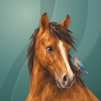
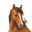
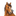
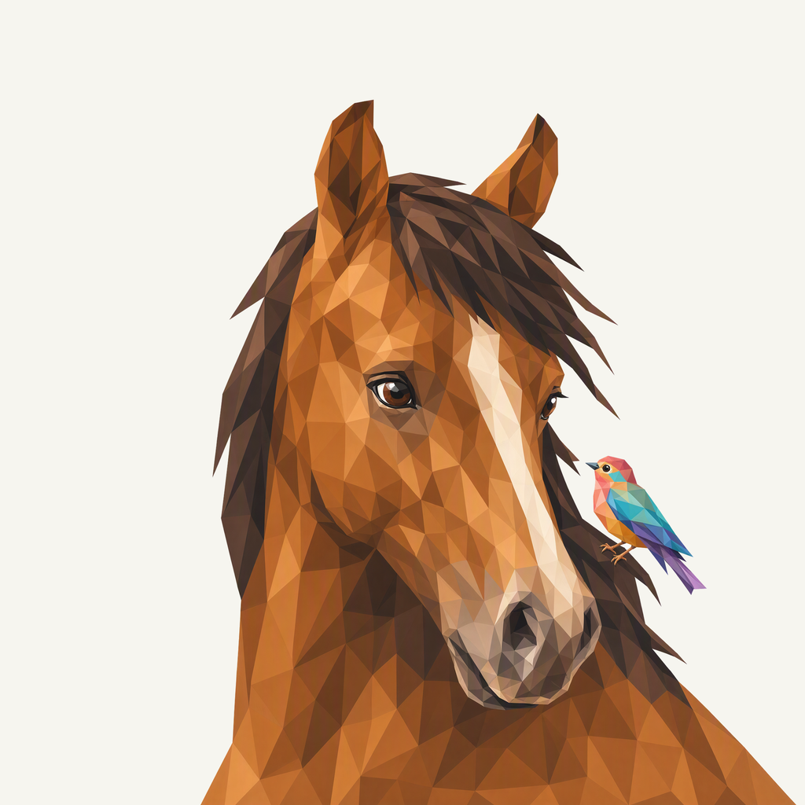
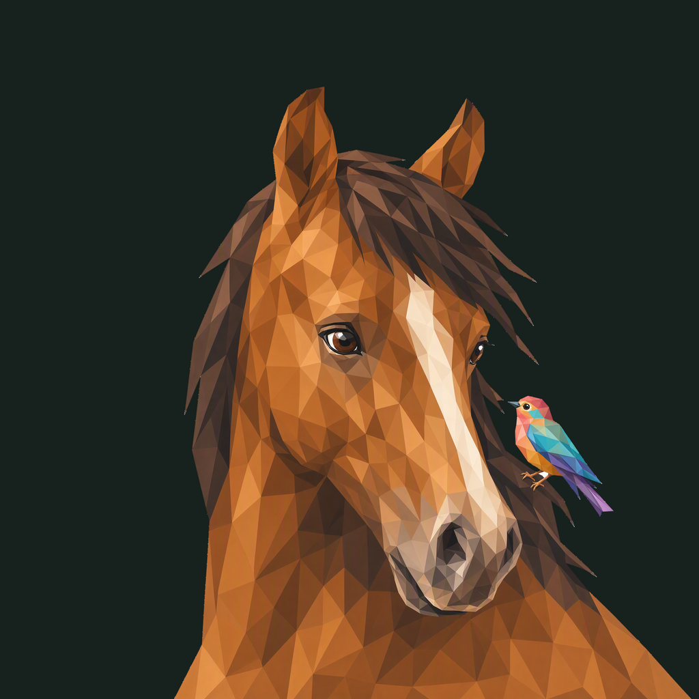

01 / Composition
A small visitor
The horse turns with relaxed ears and a soft muzzle. A small bird sits at the outer mane edge, visibly extending into negative space; natural shoulder anatomy continues below and to the right.
Animal family · Refined identity
A horse notices a tiny visitor at the edge of its mane. Chestnut warmth, one clear accent.
Adopted redesign · finishing 01
Native 2048 × 2048
01 / Composition
The horse turns with relaxed ears and a soft muzzle. A small bird sits at the outer mane edge, visibly extending into negative space; natural shoulder anatomy continues below and to the right.
02 / Drawing
Broad chestnut coat planes meet a dark chocolate mane and a quiet ivory blaze. The single jewel-colored bird carries the multicolored detail.
03 / Presentation
Unequal long wind folds lean across a deep petrol-teal field. Fine grain and shallow shadows separate the warm horse from its cooler setting.
Presentation tiles at 128/64 px; transparent artwork for small app and browser marks.



The complete ears, mane tips, face and bird retain at least 214.5 px of protected clearance. Only natural lower/right shoulder entries cross the frame. Two native requests were made: study 01 was rejected because its bird stayed inside the mane; study 02 is selected.
A designed background, with colors sampled from the exact native artwork.
Select a swatch to copy its hex value. The Steed UI primary (#1DA599) remains a separate product color.
One transparent foreground, checked on two contrasting backgrounds.


Azure Foundry · gpt-image-2 · 2 requests · native 2048 × 2048
Loading study text…
The previous identity is historical context; the current brief defines the selected animal, gesture and palette. Frogie guides connected flat facets; these owner-provided boards guide the independent background, offset framing, and matte surface.


{kind=link}
{kind=link}
{kind=link}
{kind=link}
{kind=link}